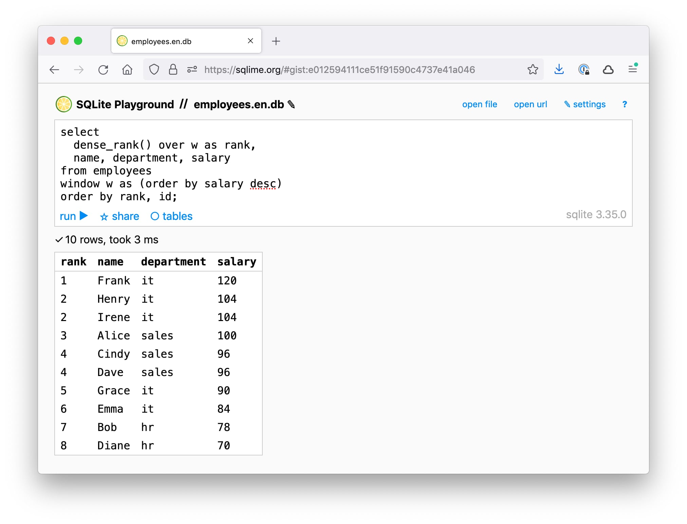

SQLime 是一個在線 SQLite 操練場 用於調試和共享 SQL 片段。 有點像 JSFiddle，但是是對於 SQL 而不是針對 JavaScript。
SQLime is an online SQLite playground for debugging and sharing SQL snippets. Kinda like JSFiddle, but for SQL instead of JavaScript.

以下是一些顯著的特點： Here are some notable features:
🔋 瀏覽器中的成熟數據庫 Full-blown database in the browser
SQLime 由最新版本的 SQLite 提供支持，採用版本是優秀的 sql.js 項目。 SQLime is backed by the latest version of SQLite, provided by an excellent sql.js project. 它提供了一個功能齊全的 SQL 實現，包括索引、觸發器、 瀏覽、執行、CTE、窗口函數和執行計劃。 It provides a full-featured SQL implementation, including indexes, triggers, views, transactions, CTEs, window functions and execution plans.
🔌 連接任何數據源 Connect any data source
連接任何本地或遠程 SQLite 數據庫。Connect any local or remote SQLite database. 同時支持文件 和 超連接 URL Both files and URLs are supported. 例如，嘗試加載 For example, try loading the 員工數據庫 Employees database 來自 GitHub 存儲庫。from the GitHub repo.
🔗 保存並與他人分享 Save and share with others
SQLime 將數據庫和查詢都保存到 GitHub 以便您以後可以重新訪問它們或與同事分享它們。 數據庫存儲為純文本 SQL 轉儲，因此很容易 讀取代碼或將數據導入 PostgreSQL、MySQL、 或其他數據庫。
SQLime saves both the database and the queries to GitHub so that you can revisit them later or share them with a colleague. The database is stored as a plain text SQL dump, so it's easy to read the code or import data into PostgreSQL, MySQL, or other databases.
例如，這裡是 For example, here is the gist 對於員工數據庫 for the Employees database, 這是它的 and here is the 分享鏈接 sharing link for it.
📱 移動友好 Mobile friendly
大多數操練場不適合小屏幕。 SQLime 是專門在移動設備上設計和測試的。 Most playgrounds are not meant for small screens. SQLime was specifically designed and tested on mobile devices.
🔒 安全且私密 Secure and private
沒有服務器。 SQLime 完全在瀏覽器中運行。 GitHub API 令牌也存儲在本地。 查詢是 在您的帳戶中保存為私有 GitHub gists。 您的數據只屬於您。 There is no server. SQLime works completely in the browser. The GitHub API token is also stored locally. Queries are saved as private GitHub gists within your account. Your data is yours only.
⌨️ 極為簡單 Dead simple
除了 SQLite (sql.js)，SQLime 的第三方依賴項為零。 傳統的 HTML、CSS 和 vanilla JS——僅此而已。 沒有框架，沒有繁重的編輯器，沒有過時和易受攻擊的庫。 SQLime has zero third-party dependencies other than SQLite (sql.js). Good old HTML, CSS, and vanilla JS — that's all. No frameworks, no heavy editors, no obsolete and vulnerable libraries. 只是一些模塊 Just some modular 開放源碼 open-source code, 易於掌握和擴展 which is easy to grasp and extend.
鍵盤快捷鍵 Keyboard shortcuts
| win | mac | |
|---|---|---|
⌃↵ |
⌘↵ |
運行查詢 run query |
⌃O |
⌘O |
打開文件 open file |
⌃U |
⌘U |
打開網址 open url |
⌃S |
⌘S |
保存並分享 save and share |
⌃/ |
⌘/ |
顯示表格 show tables |